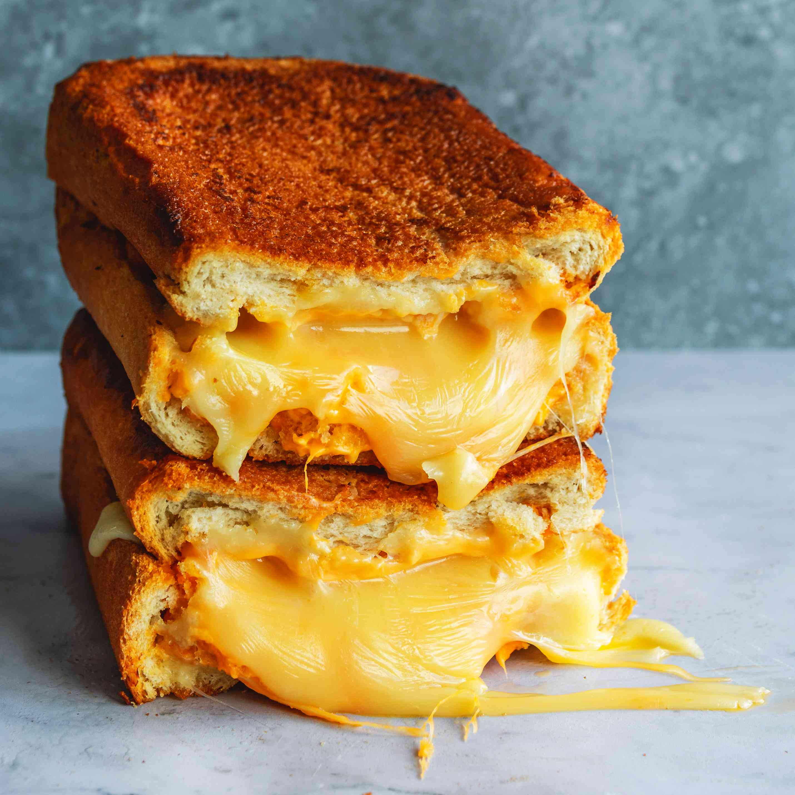

Sweet n Spicy Grilled Cheese
Here is how i make a personally weird kind of grilled cheese.

Unlike the image, this recipe actually does not use orange cheese!
Ingredients
- 2 slices of whole wheat bread
- As many slices of pepper jack cheese as you see fit
- Salt
- Pepper
- 2 Tsp Honey
- 4 Tsp Cayenne Pepper
- Unsalted Butter
Directions
- Place the cheese slices between the two slices of bread
- Melt butter in the skillet and place sandwhich in skillet. Toast for 45 seconds, add half the Honey and Cayenne, then turn over.
- Season sandwhich with salt and pepper, cook for 45 more seconds before adding the remaining Honey and Cayenne, then turning it over again.
- Continue to cook on each side in 45-60 second increments until the bread and cheese are cooked to your liking.
Unconventional style, but I swear it's so good.